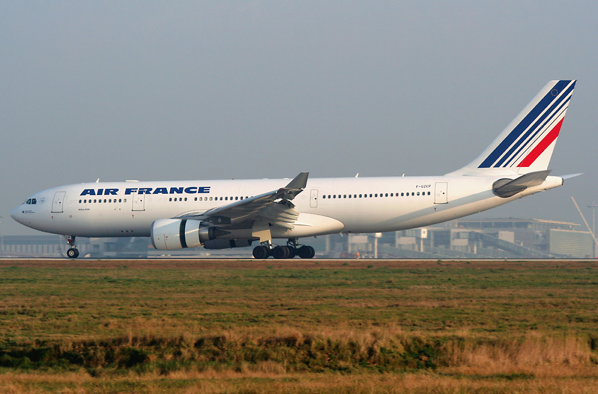
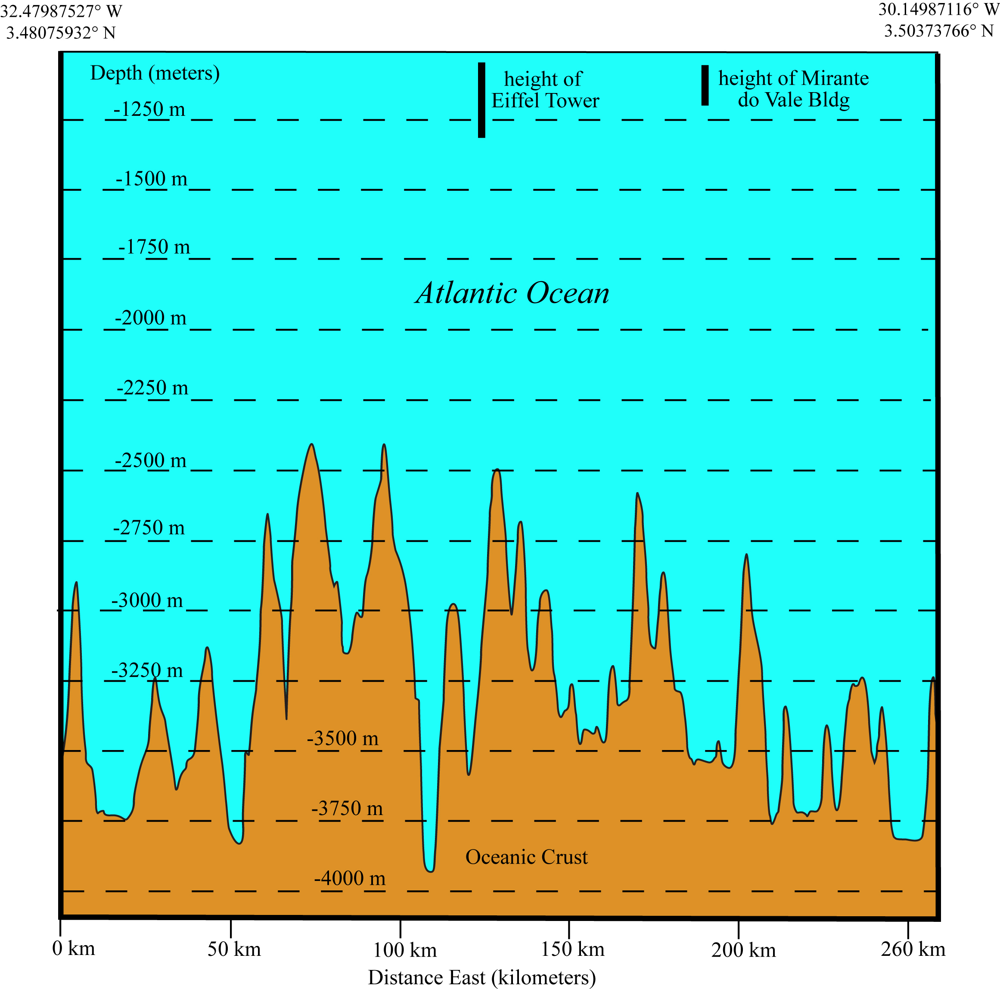
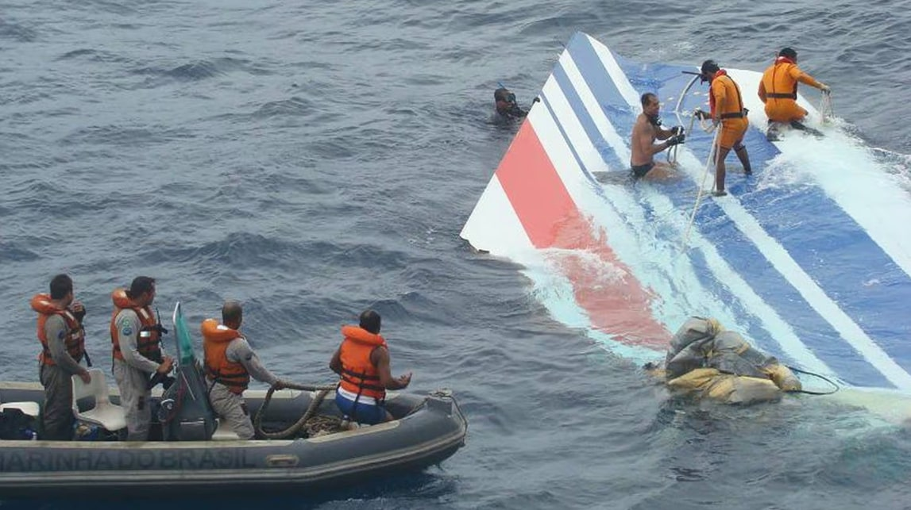
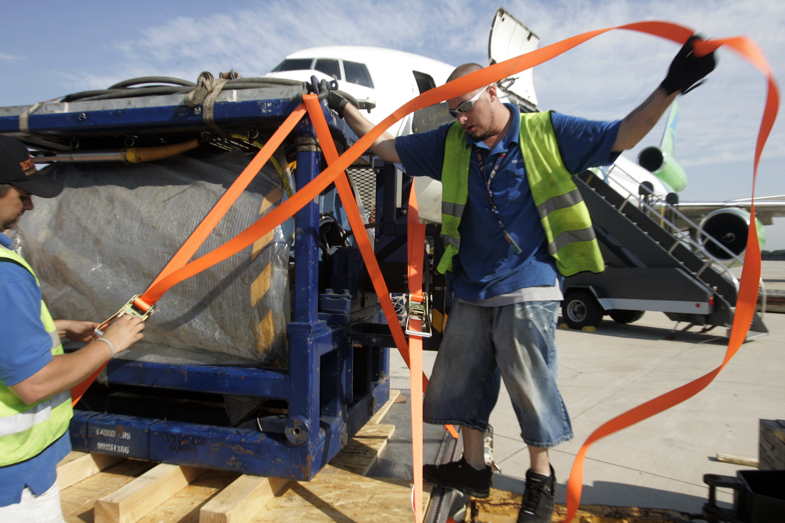

An Air France Airbus A330 climbs into the night over the mid-Atlantic, its speed sensors freeze over in a tropical storm, and three experienced pilots spend the next four and a half minutes never understanding what their own airplane is doing. It falls for three minutes and thirty seconds. It never stops falling until it hits the ocean.
All times in this case file are UTC, matching the official BEA report, since the flight crossed from Brazil's time zone (UTC−3) into airspace approaching Europe. Rio local departure time was 19:29; in UTC, the same moment is 22:29.

At 22:29 UTC on May 31, 2009, Air France Flight 447 lifted off from Rio de Janeiro–Galeão International Airport, bound for Paris Charles de Gaulle. It was a routine, if long, overnight transatlantic crossing: roughly eleven hours in the air, the kind of flight most of the 216 passengers aboard would spend asleep. Twelve crew were on board: three pilots and nine cabin crew.
In command was Captain Marc Dubois, 58, with nearly 11,000 flight hours, more than 1,700 of them on the A330. Beside him in the cockpit were two first officers: David Robert, 37, a highly experienced pilot with over 6,500 hours who also held a supervisory training role within Air France, and Pierre-Cédric Bonin, 32, the most junior of the three with roughly 2,900 hours. It was a three-pilot crew because the flight was long enough to require rotating rest breaks; on a widebody like the A330, that meant at any given moment, one of the two first officers would be alone at the controls with the other, or with the captain.
The 216 passengers came from at least 32 countries. The largest groups were French (61) and Brazilian (58), with 26 German nationals and smaller groups from Italy, China, and dozens of other countries. Eight of the passengers were children, including one infant. Flight 447 was, in every visible way, an ordinary flight: the kind of overnight widebody crossing that happens thousands of times a year without incident, carrying people home from vacations, to jobs, to family. Nothing about the first three hours of this one suggested it would end any differently.
Roughly three hours into the flight, Flight 447 approached a well-known hazard of transatlantic routing: the Intertropical Convergence Zone, a band of towering, often violent tropical thunderstorms that circles the equator over the Atlantic. Crossing it was routine. What happened while crossing it was not.
Flight 447 reports its position over waypoint INTOL, roughly 565 km (350 miles) off Brazil's northeastern coast, and requests a route deviation around building weather. It is the last routine voice contact anyone outside the aircraft will ever have with it.
The aircraft passes beyond the range of Brazilian air traffic control's radar, as is normal for this stretch of ocean — the same absence of live tracking that would, five years later, make MH370 so much harder to find. From this point on, controllers can only estimate its position from its filed flight plan and periodic satellite data bursts, not track it directly.
Captain Dubois, who had been awake since the previous morning, leaves the flight deck for a scheduled rest break, as is standard on long-haul flights with an augmented crew. Before leaving, he briefs First Officers Bonin and Robert on the weather ahead. First Officer Bonin, the more junior of the two, takes the left seat as pilot flying. Robert, the more senior, is pilot monitoring.
Bonin radios the cabin crew to expect turbulence ahead and to prepare the cabin, a routine precaution before entering a storm system. The seatbelt sign is on. Nothing yet suggests anything beyond ordinary weather avoidance.
The aircraft enters the outer edge of the storm system at 35,000 feet, cruising on autopilot. The crew dims the cockpit lighting and discusses the faint smell of ozone and a slight rise in cabin temperature, both consistent with flying near active convective weather at altitude.
High-altitude tropical storm systems like this one can carry dense concentrations of tiny ice crystals invisible to onboard weather radar, which is tuned to detect liquid water. Flight 447 flies directly into such a cloud. The ice begins accumulating somewhere it was never supposed to matter: three small tubes on the aircraft's nose called pitot tubes, which measure airspeed by sensing oncoming air pressure.
A pitot tube is a small, forward-facing probe that measures the pressure of oncoming air to calculate the aircraft's airspeed, one of the most fundamental pieces of information a modern airliner's flight computers use, feeding everything from the autopilot to the stall-protection systems. The A330 carried three of them, redundant by design. When ice crystals blocked all three simultaneously, even briefly, the aircraft's computers lost a value they treat as sacred: how fast is this airplane actually moving through the air.
Investigators later found dozens of prior incidents of pitot icing on A330 and A340 aircraft in the years before this flight, including at least one other Air France A330 just weeks earlier. Airbus had already issued a recommendation in 2007 to replace the model of pitot tube installed on Flight 447 with an improved version. That replacement had not yet been carried out on F-GZCP.
At 02:10:05 UTC, with all three pitot tubes blocked, the autopilot did exactly what it was designed to do: it disconnected. An airplane cannot fly itself accurately without knowing its own speed. For the next four minutes and twenty-three seconds, two first officers would have to fly a widebody jet by hand, at night, in weather, on instruments that were, for a critical stretch, lying to them.
The moment the autopilot disconnected, the A330's flight control computers also dropped out of "normal law," the mode in which software firmly prevents a pilot from stalling or over-stressing the aircraft, and into a degraded backup mode called "alternate law," in which many of those same protections are no longer guaranteed. Both first officers were told this was happening, in real time, by the aircraft's own automated voice and visual alerts. Neither had ever practiced hand-flying a widebody at cruise altitude in this exact combination of conditions, because almost no airline training program at the time asked pilots to.
Bonin, hand-flying for the first time in the emergency, reacted immediately, and reacted wrong. Within about ten seconds he pulled the side-stick back, pitching the nose up sharply, a nose-up input he would sustain, in one form or another, for nearly the entire remainder of the flight. Robert, reading the aircraft's warning messages aloud, correctly identified that they had lost valid airspeed and that the aircraft's protections were degraded. Neither pilot said the word that mattered most in the next few seconds: slow down the climb, lower the nose, fly pitch and power. Both of them had been trained for years to trust the aircraft's automation more than their own hands. In this moment, hands were all they had.
Autopilot & Autothrust Disconnect · 35,000 Feet
The last moment the aircraft was flying itself.
“We've lost the speeds — alternate law.”
Intermittent stall warning tone, as the aircraft's angle of attack repeatedly crossed the threshold that triggers it.
The A330's stall warning system is designed to distrust extremely low, and therefore likely erroneous, angle-of-attack readings, a sensible safeguard in normal circumstances. But as Flight 447's actual angle of attack grew more and more extreme during the stall, it eventually exceeded the values the system considered plausible, and the stall warning fell silent, even though the aircraft was, in fact, more stalled than ever. Worse, on at least one occasion when a pilot briefly lowered the nose, the correct recovery action, the angle of attack came back into a "plausible" range and the stall warning began blaring again, as if the correct input had caused the danger. Investigators concluded this almost certainly reinforced, rather than corrected, the fatal instinct to keep pulling back.
By 02:11:10 UTC, roughly a minute after the autopilot dropped out, Flight 447 had climbed, unintentionally, to just over 38,000 feet, its angle of attack near 16 degrees, well beyond what its wings could sustain lift at that altitude and speed. It had entered an aerodynamic stall. It would not leave one again for the rest of the flight.
A stall is not a mechanical failure. It's an aerodynamic condition: the wing's angle through the air becomes too steep for airflow to stay attached to its upper surface, and lift collapses. The recovery is taught to every student pilot in the first weeks of flight training: lower the nose, reduce the angle of attack, let the wings fly again, and only then think about climbing. It usually costs a few hundred feet of altitude. At 38,000 feet, Flight 447 had all the altitude in the world to attempt it.
At 02:11:42 UTC, alerted by his first officers, Captain Dubois hurried back into the cockpit. He found an aircraft descending at nearly 10,000 feet per minute, its angle of attack already past 40 degrees, alarms sounding, and two exhausted, frightened first officers who could not agree on what the airplane was doing or why. He had, at most, two and a half minutes left to understand a crisis he had not seen begin, from a jump seat, in the dark, without ever taking the controls himself.

At 02:11:37 UTC, First Officer Robert took hold of his side-stick and called out, "controls to the left," briefly pushing the nose down, the correct recovery input. On the Airbus A330, the two pilots' side-sticks are not physically linked; each moves independently, and neither pilot can feel what the other is doing through the controls the way they could on a traditional yoke. Almost immediately, Bonin took priority back without announcing it, again pulling the nose up. For a portion of the following minute, the flight data recorder shows both pilots making opposing inputs on their side-sticks at the same time, a scenario the aircraft is built to allow, and one neither pilot fully grasped was happening to the other in the moment.
“I have no more displays.”
“We have no valid indications.”
“No, no, no — don't climb!”
“Go ahead, you have the controls.”
These lines are drawn from the widely reported English translation of the CVR transcript in the BEA's July 2012 final report. The complete, unedited transcript has never been officially released to the public; French law restricts publication of cockpit voice recordings out of respect for the crew and their families, and we have not reproduced it here beyond these few, extensively corroborated lines.
Bonin's handoff of the controls, at 02:13:32, came roughly forty seconds before impact, with the aircraft already below 5,000 feet, still descending at close to 11,000 feet per minute, still stalled. It was, by any honest measure, too late. Robert took the controls and pushed the nose down, the textbook-correct response, but there was no longer enough altitude left for the aircraft to regain flying speed before it reached the ocean.
At 02:14:28 UTC, the flight data and cockpit voice recorders stopped. In its final recorded instant, Flight 447 was descending at roughly 10,912 feet per minute, its nose pitched up more than 16 degrees even as it fell, still stalled, its wings never having flown again since 38,000 feet.
Four seconds before the recorders stopped, the Ground Proximity Warning System began sounding "sink rate," then "pull up," alarms designed for aircraft flying too low over terrain, not for a widebody falling out of the base of a storm at cruise-descent speeds into open ocean. There is no evidence any of the three pilots ever spoke the word "stall" aloud during the entire four minutes and twenty-three seconds between the autopilot disconnecting and the recorders going silent.
The aircraft struck the surface of the Atlantic Ocean nose-up, wings roughly level, moving forward at about 107 knots and descending at about 108 knots, a combined impact more violent than either number alone suggests. It broke apart on contact. Investigators later concluded the forces involved would have killed everyone aboard instantly; there was no survivable window, no interval of the fall in which the outcome was still in doubt by the final seconds. All 228 people on board Flight 447 died in that instant, roughly 1,070 kilometers (665 miles) northeast of Fernando de Noronha, Brazil, in open ocean more than three miles deep.
Loss Of Recorder Data · Mid-Atlantic Ocean
Three minutes, thirty seconds, stalled the entire way down.
Flight 447 missed its scheduled position report at 03:33 UTC and never checked in again. Brazilian and Senegalese air traffic control, unable to reach the aircraft on radio, alerted search and rescue authorities. What followed became one of the largest, most technically difficult air and sea searches in aviation history, split into two very different phases.
Brazilian military aircraft begin scanning a vast stretch of open Atlantic based on the flight's last known position and projected track, an area ultimately covering tens of thousands of square miles of featureless ocean.
Brazilian Air Force aircraft spot floating debris and a fuel slick roughly 650 km (400 miles) northeast of the Fernando de Noronha archipelago, confirming the aircraft had gone down at sea rather than diverting or landing anywhere else.
Brazilian Navy vessels recover the first bodies and, on June 7, the aircraft's vertical stabilizer, its blue, white and red tail fin nearly intact, floating upright in open water. The image of French, Brazilian and Navy divers working to secure it became one of the defining photographs of the disaster.
Over the following weeks, ships recover 50 bodies and hundreds of pieces of floating debris. By the time the surface search is called off, roughly 640 separate items of wreckage have been catalogued. But the two flight recorders, the black boxes that could explain what actually happened, are nowhere among them. They are built to sink, not float, and they are believed to be more than three miles down.
French and international teams mount two separate deep-sea search phases using towed sonar and remotely operated vehicles, covering large sections of seafloor near the last known position. Both come back empty. The terrain is mountainous, deeply fractured undersea volcanic ridges thousands of meters down, and the recorders' locator "pinger" beacons, with only a 30-day battery life, had long since gone silent.


The United States Navy contributed its Towed Pinger Locator and deep-ocean salvage expertise; France's BEA coordinated the overall investigation; multiple countries offered ships, sonar and submersible assets. Nearly two full years would pass, through three failed or partial search phases, before anyone found what they were actually looking for.
In early 2011, the BEA commissioned a fourth search phase, this time using a different method: instead of listening for a pinger that had died two years earlier, search teams from the Woods Hole Oceanographic Institution used autonomous underwater vehicles to methodically map the seafloor with sidescan sonar, refining the search area using ocean-drift modeling to work backward from where the floating debris had been found in 2009.
On April 3, 2011, less than a week into the new search, the Woods Hole team's sonar found what nearly two years of searching had missed: a debris field on the ocean floor roughly 3,900 meters (about 12,800 feet, more than two miles) down, consistent with the crash site. Remotely operated vehicles were sent down to confirm the find and begin the painstaking work of locating the two flight recorders among the wreckage.
On April 27, 2011, the flight data recorder's case was recovered, though its memory module, the part that actually holds the data, was found separately and brought up a few days later, on May 1. The cockpit voice recorder followed on May 1–2. Both recorders, remarkably, were successfully downloaded once returned to BEA laboratories in France; nearly two years in freezing, crushing deep-ocean pressure had not destroyed the data inside their protected memory modules. Between May and June 2011, search vessels also recovered 104 more victims from the wreckage, along with much of the aircraft's structure, though 74 people were never recovered at all.
Flight 447 went down roughly three and a half hours into an eleven-hour flight, in open ocean far from any coastline, one of the reasons the search proved so difficult.
With both recorders finally in hand, the BEA spent over a year reconstructing, second by second, exactly what the aircraft did and exactly what its pilots did in response. The findings, published in a final report in July 2012, are the most disturbing part of this entire case file.
This is the finding investigators kept returning to. Not that the pilots made a mistake, but that for three minutes and thirty seconds, none of the three ever appears to have correctly diagnosed the fundamental problem: the wings had stopped flying. Bonin repeatedly expressed confusion about why the aircraft wouldn't climb the way he wanted it to. At no point does the transcript show any of the three pilots stating plainly, "we are stalled, lower the nose," the single sentence that could have changed everything, until Robert's late, unclear "descend" calls in the final seconds, by which point recovery was no longer possible.
Flight data shows nose-up side-stick input from Bonin for the overwhelming majority of the descent, the opposite of stall recovery. Investigators and outside experts have offered several partial explanations: a startle response under extreme stress, confusing training reflexes from lower-altitude scenarios, degraded instrument information, and a stall warning system that, as described above, actually fell silent at the most extreme angles of attack and resumed when the correct input was briefly applied. No single explanation is treated as sufficient on its own.
The BEA's report was sharply critical of how poorly the three-person crew communicated once the emergency began: dual, uncommunicated stick inputs; a captain returning to a briefing that was too rushed and unclear given how little time remained; ambiguity for long stretches over who actually held the controls. Airbus's side-stick design, unlinked and largely silent to the other pilot, was found to have made this specific failure mode easier to fall into, though investigators stopped short of calling it, on its own, a design flaw the crew could not have overcome with better training and communication.
Perhaps the report's most consequential finding: in 2009, high-altitude manual stall recovery, flying a swept-wing jet by hand at cruise altitude, in a stall, with degraded instruments, was not a standard, recurring part of most airline pilots' training anywhere in the world, Air France included. Pilots trained extensively for automation failures and for stalls close to the ground on approach or takeoff. Almost none had ever practiced this exact, specific nightmare: a high-altitude stall with unreliable airspeed, at night, in weather. The BEA concluded the crew's response, while fatally wrong, was also a symptom of a training gap the entire industry shared.
The stall was never recognized by the crew, either from an aerodynamic point of view or in terms of associated symptoms, and the pilots never really understood they were flying a stalled aircraft.
— Paraphrased finding of the BEA's July 2012 final report on Air France Flight 447Air France 447 reshaped commercial pilot training worldwide, changed how airlines think about high-altitude manual flying, and forced a hard reckoning over how much airline crews had come to depend on automation they didn't always fully trust, or fully understand.
Regulators including the FAA and EASA subsequently mandated Upset Prevention and Recovery Training (UPRT) for airline pilots, explicitly including high-altitude stall recognition and manual recovery, scenarios that had previously been considered unlikely enough to skip. Simulator training worldwide now routinely includes unreliable-airspeed and high-altitude stall scenarios modeled directly on this flight.
Air France accelerated replacement of the vulnerable pitot tube model within days of the crash. Aviation regulators in Europe and the United States issued mandatory airworthiness directives later that year requiring operators of affected Airbus models worldwide to install improved, less icing-prone probes.
The investigation's findings about dual, uncoordinated side-stick inputs prompted renewed industry debate over cockpit control-input awareness, reinforced callout procedures for taking control, and closer scrutiny of how clearly automated systems communicate degraded protection modes to pilots in the moment they need to know most.
Air France and Airbus both faced a French criminal trial over the disaster beginning in 2022, more than a decade after the crash. In 2026, both companies were found guilty of corporate manslaughter and fined, the maximum penalty available under French law, though prosecutors and victims' families had sought harsher accountability throughout years of legal proceedings.
Passengers And Crew, Air France Flight 447
Their names are recorded in the BEA's final report and in memorials in France and Brazil. They are not forgotten here.
Every fact in this case file was cross-referenced against at least two independent sources, anchored by the official French government investigation. All links open in a new tab.
The French Bureau d'Enquêtes et d'Analyses' complete final report, the primary source for the technical timeline, CVR findings and safety recommendations in this case file.
The BEA's official case page for the investigation, including report updates and supporting documentation.
Independent aviation accident database entry archiving the official report findings and aircraft history.
Contemporary and retrospective BBC reporting on the disappearance, the search, and the investigation.
Reporting on the 2011 discovery of the wreckage field and the recovery of both flight recorders.
News coverage of the BEA's final report findings and industry reaction.
The oceanographic institution's own account of the sonar search that located the debris field and recorders after nearly two years.
Used as a cross-reference for dates and figures against the primary sources above, not as a standalone source.